opcod3r's blog
Infosec/Dev/CC Things
Overview
In this blog post, we’ll tackle: bypassing mTLS with Flutter due to common mistake ( ¯\(ツ)/¯ ) from developers. Before we continue.. into the specifics, it’s essential to understand some foundational concepts about how mTLS—mutual Transport Layer Security—functions and why certain coding or configuration errors can compromise its intended security benefits.
Our journey will begin with an exploration of Flutter’s network layer, focusing on the nuances of mTLS implementations and how these can be misconfigured or exploited. This understanding is pivotal as we continue into the common mistakes developers make when implementing mTLS in Flutter applications.
MTLS ( Mutual TLS )
Mutual TLS (mTLS) authentication ensures that traffic is both secure and trusted in both directions between a client and server. It allows requests that do not log in with an identity provider (like IoT devices) to demonstrate that they can reach a given resource. Client certificate authentication is also a second layer of security for team members who both log in with an identity provider (IdP) and present a valid client certificate.
With a root certificate authority (CA) in place, Access only allows requests from devices with a corresponding client certificate. When a request reaches the application, Access responds with a request for the client to present a certificate. If the device fails to present the certificate, the request is not allowed to proceed. If the client does have a certificate, Access completes a key exchange to verify.
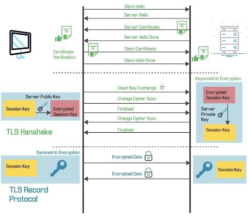
Flutter + SSL Pinning and MTLS
Flutter does not perform CA checks as demonstrated in the code snippet from this Dart SDK file on GitHub. There is extensive documentation and many blog posts dedicated to bypassing traditional SSL pinning, such as:
- Intercepting Flutter Traffic on iOS and Android by NVISO
- Flutter SSL Pinning Bypass Techniques on GitHub
However, many modern applications are transitioning to mTLS rather than relying solely on traditional SSL pinning. This shift adds an additional layer of security through client certificate authentication, enhancing overall protection against unauthorized access.
How the Bypass Works
To understand the process of bypassing mTLS implementations in Flutter, I’ll break down the explanation into common code patterns and their practical implementations. Here’s a look at typical methods used to implement client certificates mTLS in Flutter:
-
Loading the private key and certificate from environment variables
In this pattern, private keys and certificates are loaded from environment variables, which is considered a secure practice as it avoids hardcoding sensitive information directly in the application’s source code. Here’s an example:
class SecurityConfiguration {
static const String privateKeyBase64 = String.fromEnvironment('PRIVATE_KEY_BASE64');
static const String certificateBase64 = String.fromEnvironment('CERTIFICATE_BASE64');
static Uint8List get privateKeyBytes => base64.decode(privateKeyBase64);
static Uint8List get certificateChainBytes => base64.decode(certificateBase64);
static Future<SecurityContext> get globalContext async {
SecurityContext sc = SecurityContext(withTrustedRoots: false);
sc.usePrivateKeyBytes(privateKeyBytes);
sc.useCertificateChainBytes(certificateChainBytes);
return sc;
}
}
This code snippet demonstrates how to decode private keys and certificates stored in environment variables using base64 encoding, then use these for configuring the SecurityContext in Flutter. The withTrustedRoots: false parameter ensures that the default trusted root certificates are not automatically used, which is crucial for custom security configurations.
-
Loading static files from the assets folder
Another common approach involves storing the certificate and key as files in the application’s assets folder. This method is straightforward and often used in developmental stages:
Future<SecurityContext> get globalContext async {
final List<int> keyBytes =
(await rootBundle.load('assets/resources/key.key'))
.buffer
.asInt8List();
final List<int> certificateChainBytes =
(await rootBundle.load('assets/resources/key_crt.crt'))
.buffer
.asInt8List();
SecurityContext sc = SecurityContext(withTrustedRoots: false);
sc.usePrivateKeyBytes(keyBytes);
sc.useCertificateChainBytes(certificateChainBytes);
return sc;
}
In this example, the rootBundle.load method is used to load the key and certificate files from the assets directory, converting them into byte arrays. These byte arrays are then utilized to set up the SecurityContext. Similar to the previous example, withTrustedRoots: false is used to prevent the inclusion of default certificates, providing a clear pathway for using only the specified client certificates and keys.
The provided code examples illustrate two primary methods for configuring the SecurityContext in Flutter applications to use custom client certificates and private keys for mTLS. Both methods aim to enhance security by either isolating sensitive data (like in the environment variables method) or simplifying the development process (like in the static files method). In both cases, the SecurityContext setup involves specifying that only the explicitly provided certificates and keys are to be used, without relying on any pre-existing or default security configurations. This setup is essential in scenarios where mTLS is used, as it requires precise control over both client and server-side certificate validations.
You can now download my lab at: mtls-flutter on GitHub and try it yourself! This blog post will primarily focus on Android.
Reversing the Flutter App and Understanding the Methodology
First, download the .apk file and try using Reflutter to intercept the traffic. However, sometimes RASP (Runtime Application Self-Protection) technologies, which you can read about on GuardSquare’s RASP page (Use radare2 or IDA ;)), might prevent this. If so, you’ll need to bypass these protections before running Reflutter.
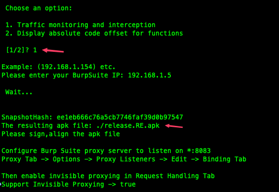
After successfully modifying the app, you need to sign the newly patched .apk with uber-apk-signer:
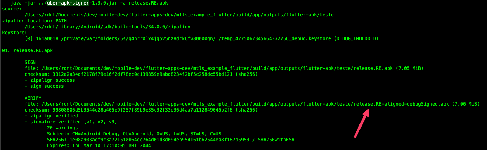
Next, install the modified .apk and set up your intercepting proxy (e.g., configuring the invisible proxy settings in Burp Suite with the appropriate TCP port and listen address).
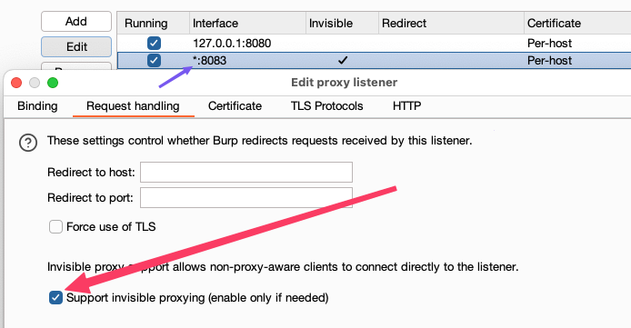
Launch the modified mtls_example app and try making a request by tapping any button. Remember to configure the proxy settings on your Android device accordingly.
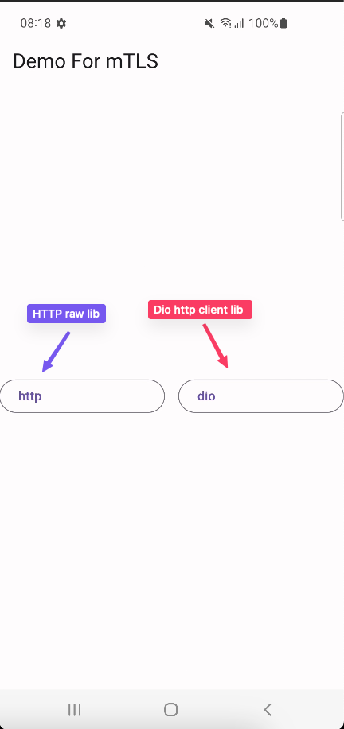
- Not work ¯\(ツ)/¯
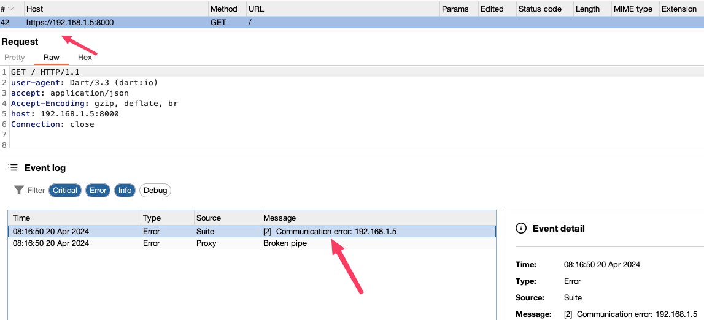
If you’re unable to make any requests, it might be time to try some Frida scripts to further probe and manipulate the application’s runtime.
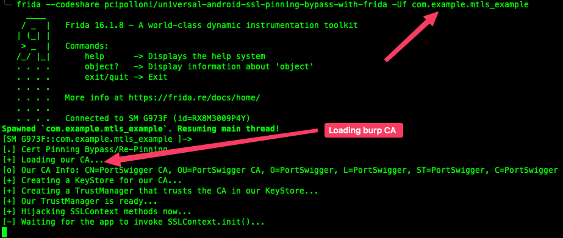
- Not work ¯\(ツ)/¯
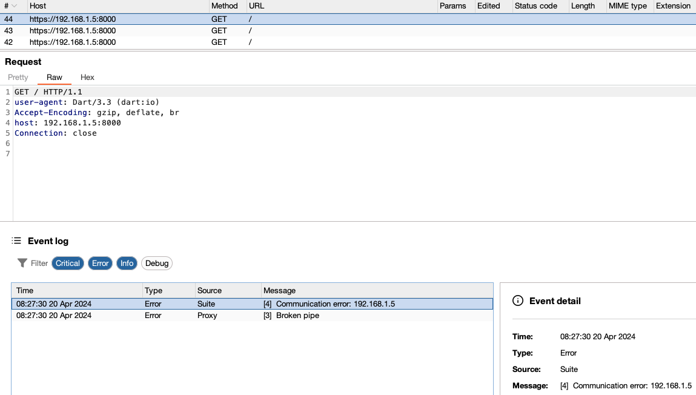
If that still doesn’t work, it’s possible another layer of protection is in place (mTLS :p ). Suppose the developer has used static files for certificate and key storage, as one method we discussed. In that case, you can easily access the .CA file and .key in the assets folder. You can then use these files to generate a .p12 file with the following command, which can be imported into Burp Suite to attempt the request again:
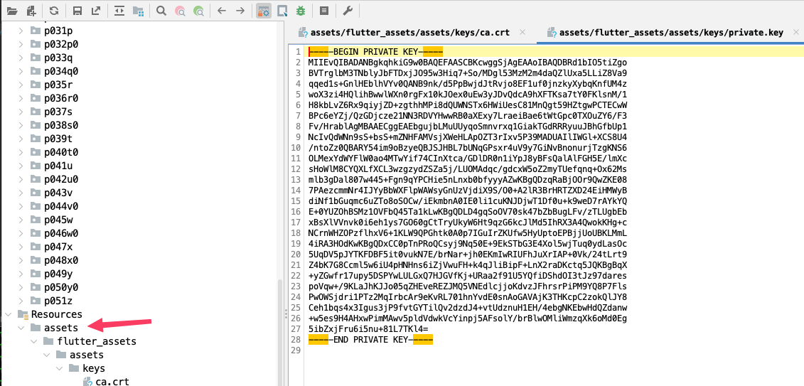
# Choose any password
openssl pkcs12 -export -out certmtls.p12 -inkey private.key -in certificate.crt
Enter Export Password:
Verifying - Enter Export Password:
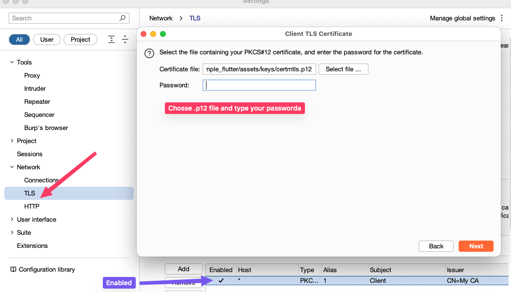
Relaunch the app and try pressing the button again. With the correct mTLS client .key and .crt configured in your intercepting proxy, you should now be able to intercept the app’s traffic.
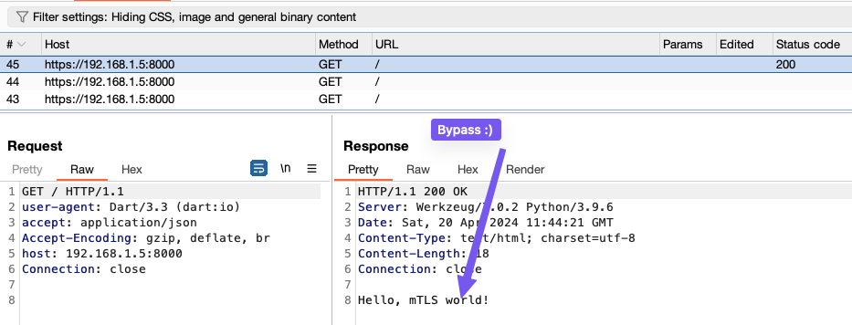
If the developer has employed environment variables or runtime configurations (the first method of implementation), retrieving the certificates could be more challenging. It would require a different approach, possibly involving extracting environment variables or intercepting them at runtime.
Testing Flutter apps poses significant challenges due to Flutter’s architecture, which compiles into a native binary for iOS and Android. For Android, after building the app (mtls_example_flutter/build/app/outputs/flutter-apk/), verify the presence of libapp.so by extracting it and using tools such as Jadx for decompiling the .apk or Radare with Frida for dynamic analysis. The core logic is encapsulated within libapp.so. Analyzing this file with tools like Ghidra or IDA is essential for understanding how certificates are embedded within the binary.
We have two approaches to choose from here: use analysis tools like Ghidra, Radare2, or IDA, or utilize a tool called Blutter.
Let’s explore using the Blutter tool. Begin by extracting libapp.so from the lib folder after unzipping the .apk:
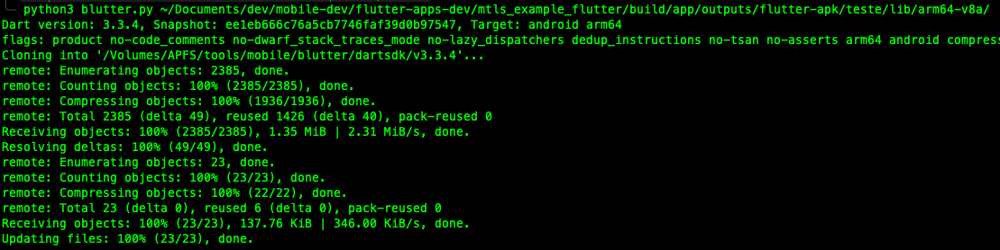
Blutter will generate the following contents:
- asm/: This directory stores the assembly code, which includes annotations from object pools and thread pools, making the assembly easier to read.
- ida_script/: This folder contains scripts for IDA which aid in the reverse engineering of the app by adding names and structures.
- blutter_frida.js: A Frida script designed for intercepting the target function.
- objs.txt: Stores the data found in object pools during the app’s initialization, making string constants easily readable.
- pp.txt: Contains all Dart objects.
If you search for the hexadecimal pattern 4c 5c 30 (LS0), you can locate the pattern of the certificate:
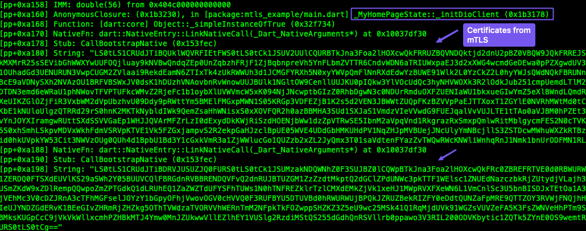
Copy this string, base64 decode it, and you will retrieve the certificate and the key:
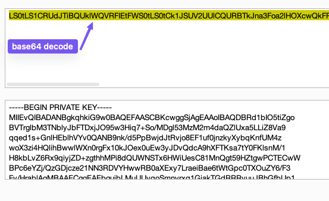
Now, you can bypass the security using the same strategy: use OpenSSL to generate the p12 file and import it into Burp Suite to facilitate the bypass.
Alternatively, you can use the Ghidra tool to search, or simply run the command strings -a libapp.so and look for the certificate pattern (this sometimes works):
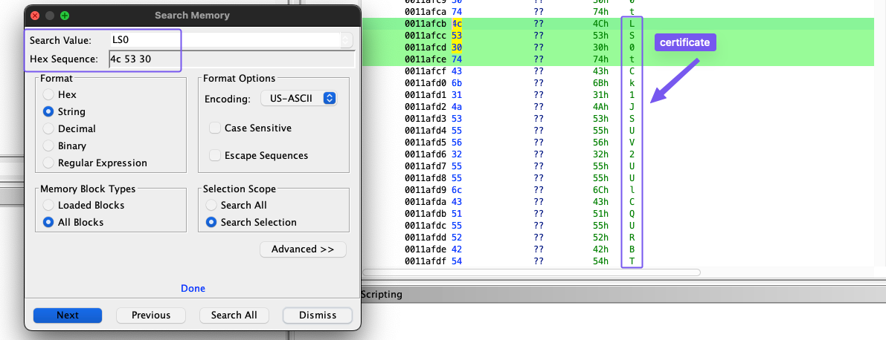
As you can see, sometimes a bit of reverse engineering skill is needed to understand how systems work and how commonly they are implemented. Practice is key :).
Thanks! :)
Refs
- https://swarm.ptsecurity.com/fork-bomb-for-flutter/
- https://developers.cloudflare.com/cloudflare-one/identity/devices/access-integrations/mutual-tls-authentication/
- https://www.guardsquare.com/runtime-application-self-protection-rasp
- https://docs.flutter.dev/resources/architectural-overview
- https://builtin.com/software-engineering-perspectives/mutual-tls-tutorial
- https://frida.re/
- https://rada.re/